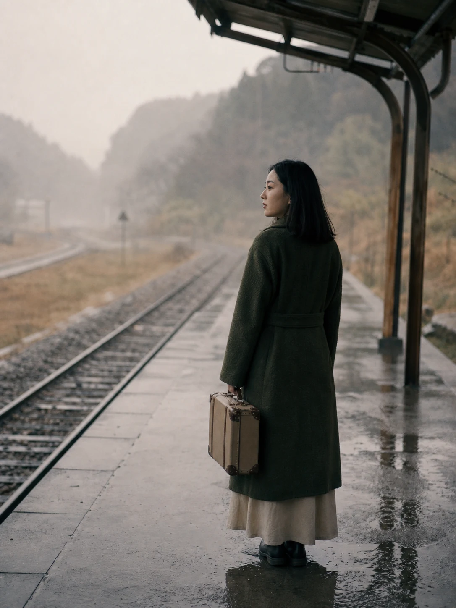
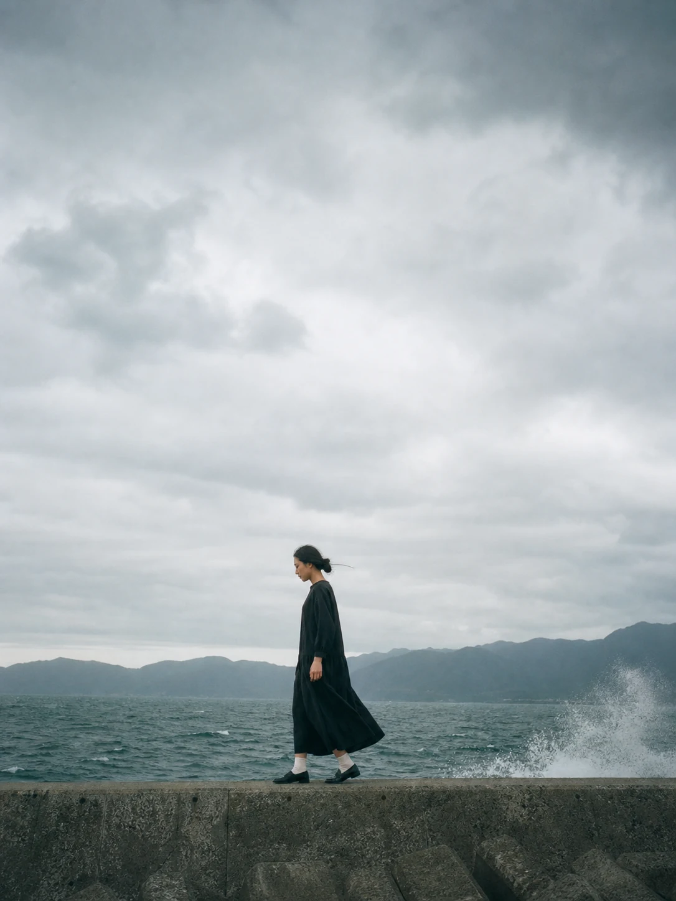
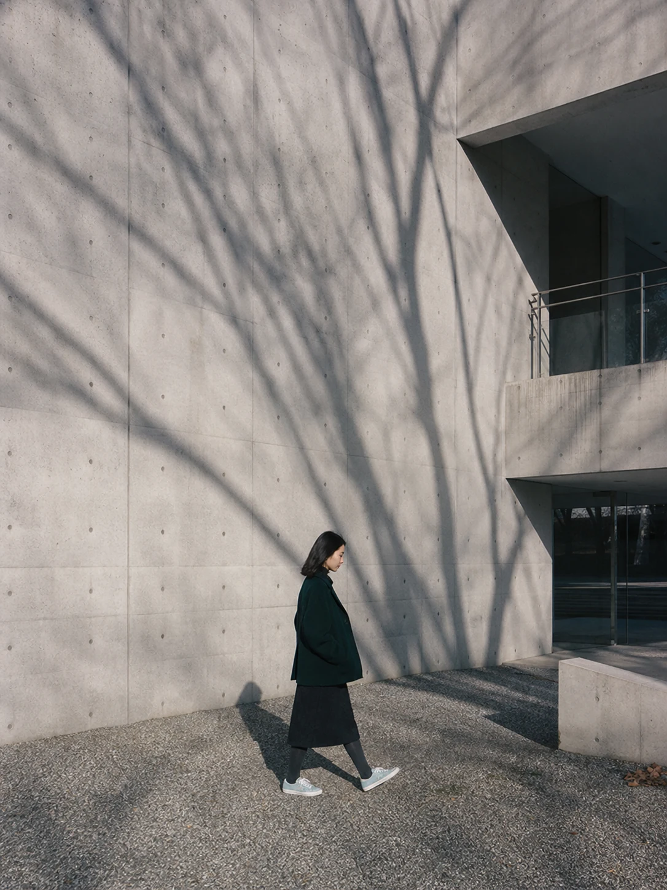
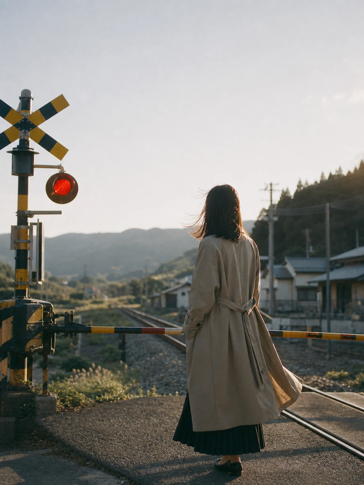
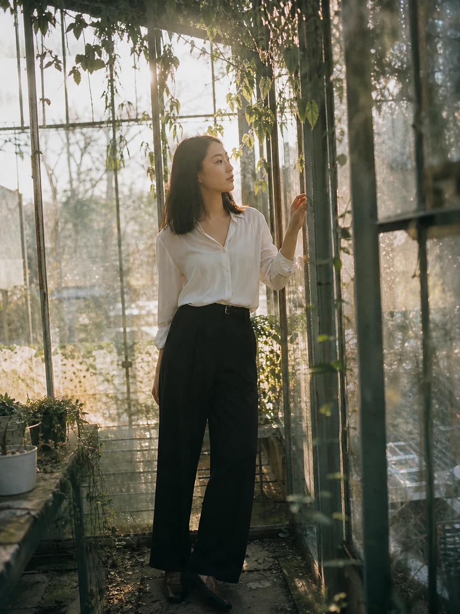
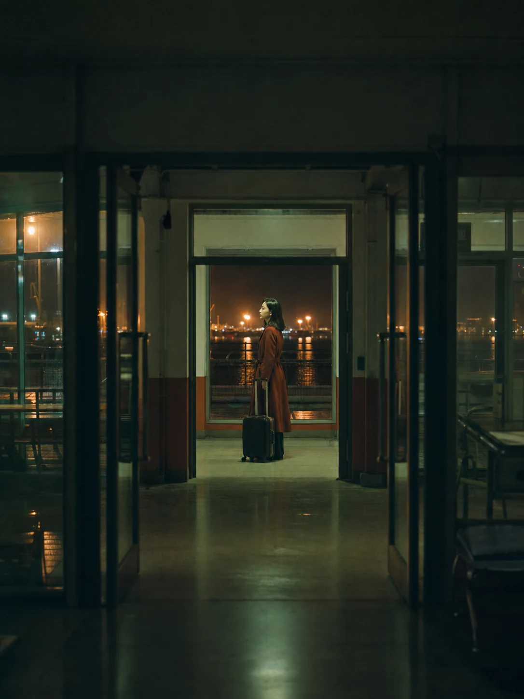
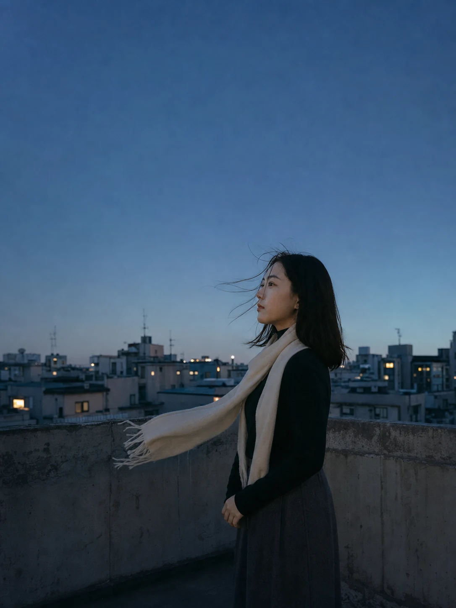

天快黑的時候，我一個人來到海邊。
夕陽落在山的另一側，餘光沿著海岸緩慢退去。風從水面吹來，把裙襬貼在腿邊，也把我的影子拉得很長。我低頭看著那道孤單的輪廓，忽然想起以前和你散步的日子。
那時候，地上總有兩個人的影子。
有時靠得很近，有時一前一後。走在前面的那個人會停下來，回頭等另一個人跟上。我們從來沒有認真想過要走去哪裡，彷彿只要還並肩走著，路的盡頭是什麼都不重要。
沒想到後來，我們真的走向了不同的地方。
我們的告別並不戲劇化。
沒有摔碎東西，沒有誰追著離開的人跑，也沒有一場足以解釋全部的爭吵。只是某個普通的晚上，我們坐在同一張桌子前，沉默比以往更久。你看著窗外，我看著桌上已經冷掉的水，兩個人都明白，有些事情終於走到了不能再假裝的地方。
你說，我們都累了。
我點點頭，努力讓自己的表情看起來平靜，好像只要不哭，這場告別就可以輕一點。可是門關上的那一刻，我才發現，真正的離開沒有聲音。
房間裡的一切仍然保持原來的樣子。你的杯子放在架上，沙發旁還有你看了一半的書，浴室裡留著一支忘記帶走的牙刷。窗簾被風吹起來，牆上的時鐘繼續往前，彷彿這個空間根本不知道，從今天開始，已經少了一個人。

後來我花了很長的時間整理那些留下來的東西。
電影票根、旅行時買回來的明信片、一起挑選的杯子，還有手機裡捨不得刪除的照片。它們都不貴重，卻像一小塊一小塊的證明，提醒我那段日子確實存在過。
有些東西被我收進紙箱，有些丟掉，有些拿在手裡很久，最後又放回原來的位置。我不是捨不得一件物品，而是害怕當這些東西都消失以後，我們的故事也會跟著失去形狀。
分開以後，最難熬的不是深夜，而是那些看起來很普通的日子。
早晨醒來，我仍然會下意識地看向手機；經過熟悉的路口，腳步會自然地慢下來；在便利商店看見你常喝的飲料，手伸出去以後才想起，已經沒有帶回去的必要。
有一次，我甚至買了兩份晚餐。回到家，看見桌上的另一份餐點，我才突然明白，人的習慣比感情更晚接受告別。
下雨的時候，我特別容易想起你。
雨水沿著公車窗戶滑落，街燈在玻璃上散成模糊的光。我坐在靠窗的位置，看著自己的倒影和外面的城市重疊。那一瞬間，我幾乎以為，只要轉過頭，你仍然會坐在旁邊，低著頭滑手機，偶爾把耳機的一邊遞給我。
但座位是空的。
我只能看著玻璃裡的自己，假裝那不是一張正在失去什麼的臉。

我曾反覆回想我們最後幾個月說過的話，試著找出一個明確的錯誤。是不是我不夠體貼，是不是你太早放棄，還是哪一天的爭吵，悄悄改變了後來的一切。
我把回憶拆開又拼回去，像在解一道只要足夠仔細，就一定能找到答案的題目。但感情不是考試。
不是付出得多就能及格，也不是足夠努力，就能讓一個已經走向別處的人回頭。有時候兩個人都沒有做錯什麼，只是走著走著，想去的地方不再相同。
曾經的你希望安定，我想去更遠的地方；後來我終於願意停下來，你卻開始渴望另一種生活。我們總在錯開的時間裡理解對方，又在終於明白的時候，失去了繼續同行的力氣。
最難接受的，不是你已經不愛我了。
而是你的未來裡，可能真的沒有我，也能過得很好。
我曾因為這件事難過，好像你的幸福如果不再需要我，就代表從前的一切都失去了意義。我甚至偷偷想過，如果你也過得不好，是不是就能證明你仍然在意。
這個念頭讓我感到羞愧。因為真正喜歡過一個人，不應該希望他永遠留在失去自己的地方。

後來我才明白，一段關係結束了，不等於那些快樂從未存在。你曾真心對我笑過，我也曾在你身邊安心地睡著。我們一起走過的路、看過的海，以及那些從未告訴別人的小事，都是真的。
只是「曾經是真的」和「以後還會繼續」，原來是兩件不同的事。
明白這件事以後，我開始練習一個人生活。
第一次獨自搭上原本總和你一起等的火車；第一次走進餐廳，只對店員說一位；第一次在週末醒來，不再急著查看手機，也不再為了等待一則訊息，把整天留在原地。
最初，那些時刻仍然很孤單。
一個人的生活像一間突然空下來的房子。說話會有回音，夜晚顯得特別長，連呼吸都清楚得讓人不習慣。我不知道該把手放在哪裡，也不知道那些原本要和你分享的事情，從今以後應該說給誰聽。
但日子沒有停下來。

我開始沿著海岸散步，帶著一台舊相機，拍風、拍雲，也拍那些沒有人坐的長椅。有時候走累了，就在路邊坐下，看天空從明亮變成深藍。
沒有人催促，也不必配合誰的腳步。
我慢慢聽見一些從前被忽略的聲音。
原來我喜歡清晨，不是真的喜歡熬夜；原來我並不討厭下雨，只是不喜歡在雨裡等待一個不會來的人；原來有很多想去的地方，即使沒有誰陪，我也仍然想親眼看見。
我曾以為失去你以後，自己只剩下一半。
後來才發現，我只是太久沒有單獨看見完整的自己。
以前為了維持我們，我收起太多想法，把「沒關係」說得太熟練。我害怕拒絕會讓你失望，也害怕說出真正的感受，會讓我們之間出現裂縫。直到關係結束，我才看見那個一直努力配合的自己，也需要被理解。
我沒有因此責怪你。
因為很多事情不是誰故意造成的。那時候的我們，都只是用自己會的方式去愛，也用自己不成熟的部分傷害了對方。
離開以後，我開始學著照顧那個被遺忘很久的人。
我重新安排房間，把窗戶打開，把不需要的東西收走，也重新決定每一段記憶應該放在哪裡。
包括你。
我沒有把你丟掉，也沒有假裝我們從未相遇。我只是把你從每天必經的地方，移到記憶比較深的位置。偶爾仍會想起，卻不再每一次都伸手觸碰。
那裡沒有責怪，也不再等待，只留著一段已經走完的路。


有一天晚上，我站在屋頂，看見城市的燈一盞一盞亮起來。天空沒有星星，風卻很大。我忽然想起我們曾經談過的未來。
那些想像如今都沒有發生，可我並沒有因此消失。我仍然站在這裡，仍然可以喜歡一首新歌，走進一座陌生的城市，在某個平凡的下午，重新對生活產生期待。
原來失去一個人，並不代表也要失去自己。
清晨，我又回到海邊。
潮水把昨晚留下的痕跡一點一點帶走。我脫下鞋子，提在手上，沿著濕潤的沙灘往前。身後只有一排腳印，前方的天空正慢慢變亮。
我沒有回頭確認那些腳印還在不在。
因為我知道，海浪終究會來。
有些痕跡消失，不代表那段路沒有走過；有些人不再同行，也不代表曾經的相遇毫無意義。

我依然記得你。
只是從今以後，不再靠記得你，證明自己曾經被愛；也不再用你的離開，懷疑自己是否值得被留下。
這一路很長。
我走過下雨的車站、沒有人的海堤、夜裡安靜的公車，也走過許多以為自己撐不下去的時刻。
直到天空亮起來，我才終於明白。
離開以後，我不是只剩下一個人。
我是終於把那個為了挽留別人，而遺忘了很久的自己，慢慢帶了回來。